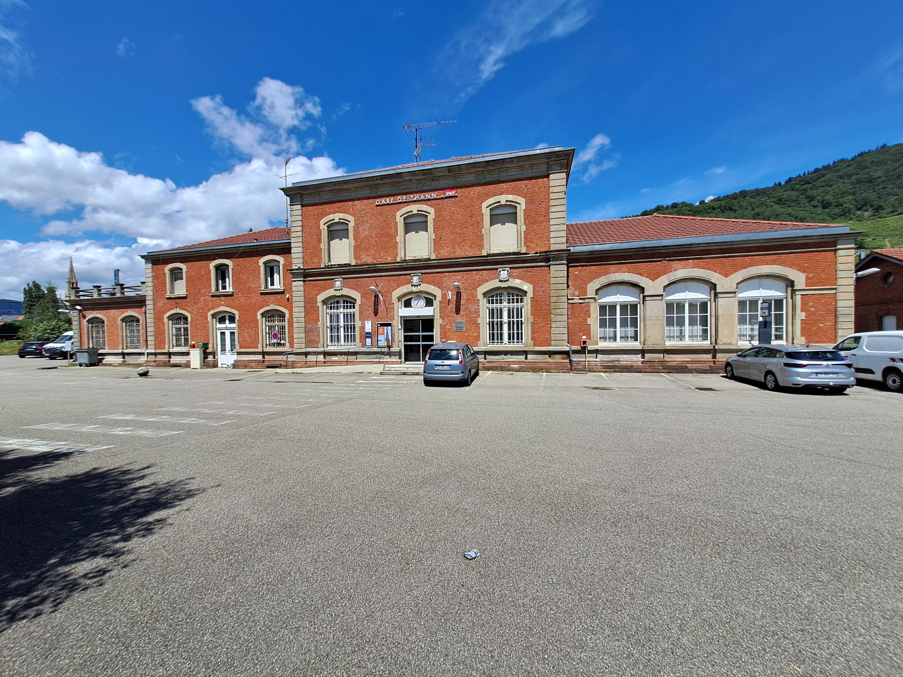

Le début du ferroviaire en France (1810-1840)
Les premières lignes
En 1823, la ligne de Saint-Etienne à Andrézieux est contruite pour transporter de la houille. Il faut attendre 1827 pour que les 23km de ligne soient mis en service. Les wagons étaient à cette époque tractés par des chevaux et non des locomotives. Cette ligne permet de facilité le transport entre la mine et le port d'Andrézieux. Le chemin de fer ne devient pas tout de suite une alternative aux canaux, il s'agit pour l'instant d'une alternative aux chariots. De nos jours, cette ligne existe encore, elle est en double voie et permet de relier Saint-Etienne à Roanne et Clermont-Ferrand.
Le début du service voyageur
En 1831, la première ligne de voyageur est mise en service, elle va de Saint-Etienne à Lyon et mesure 58km. En 1837, la ligne de Paris (Saint-Lazare) à Saint-Germain-en-Laye est inauguré par les frères Pereire. Il s'agit de la première ligne construite exclusivement pour le service voyageur. Il faudra attendre 1847, pour atteindre Saint-Germain-en-Laye grâce à la construction d'un pont ferroviaire. Les frères Pereire deviennent d'importantes figures dans le monde du ferroviaire, ils vont entre autre permettre la réation de nombreuses lignes. La compagnie des chemins de fer de Paris à Orléans crée en 1838, inaugure la ligne de Paris à Corbeil. Leur gare se situait à l'emplacement de l'actuelle gare d'Austerlitz. En 1839, le duc d'Orléans inaugure la ligne de Paris (Saint-Lazare) à Versailles (Rive-Droite). Une ligne est aussi inaugurée entre Mulhouse et Thann, de nos jours cette ligne existe encore et elle est utilisée par le Tram-Train de Mulhouse.
La gare de Thann de nos jours, elle est desservie par les trains qui vont de Kruth à Mulhouse ainsi que le Tram-Train qui va de Mulhouse-Gare à Thann-Saint-Jacques. Le tram-train passe sur les voies de tramway dans Mulhouse jusqu'au musée du train, ensuite il rejoint l'ancienne ligne. En 1840, une ligne est inaugurée entre Paris (Montparnassse) et Versailles-Rive-Gauche. Elle devient la base d'un projet pour relier Paris à Rennes par Chartres et Laval.